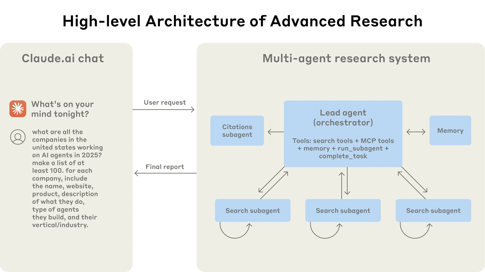
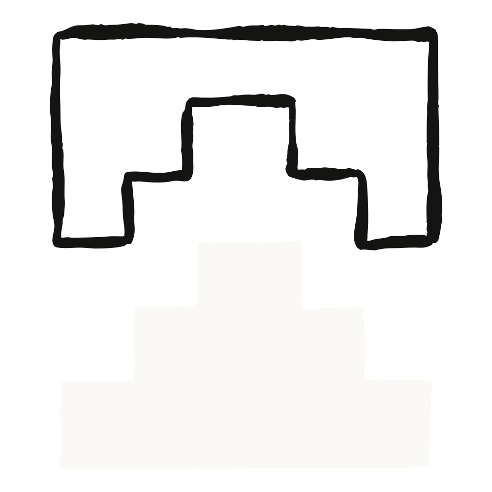

Anthropic多智能体研究系统从原型到生产的工程实践
DataHot 速览
Anthropic工程团队分享了构建Claude Research多智能体系统的历程与经验。该系统利用多个Claude代理并行探索复杂主题，解决了开放研究任务中无法预定义路径的难题。文章深入剖析了多智能体系统在协调、评估和可靠性方面面临的挑战，并总结了关键技术决策。
为什么值得关注：多智能体系统是数据代理领域的前沿方向，Anthropic的工程经验对构建同类系统具有直接参考价值。
译文
AI 逐段翻译Claude 现在具备了研究能力，可以搜索网络、Google Workspace 以及任何集成，以完成复杂任务。
这个多智能体系统从原型到生产的历程，教会了我们关于系统架构、工具设计和提示工程的宝贵经验。多智能体系统由多个智能体（在循环中自主使用工具的 LLM）协同工作组成。我们的研究功能涉及一个智能体，它根据用户查询规划研究过程，然后使用工具创建并行智能体同时搜索信息。多智能体系统在智能体协调、评估和可靠性方面带来了新的挑战。
本文将介绍对我们有效的原则——希望你在构建自己的多智能体系统时能从中受益。
多智能体系统的优势
研究工作涉及开放性问题，很难预先预测所需的步骤。无法为探索复杂主题硬编码固定路径，因为过程本质上是动态且路径依赖的。人们在进行研究时，往往会根据发现不断调整方法，跟随调查过程中出现的线索。
这种不可预测性使得 AI 智能体特别适合研究任务。研究要求在调查展开时具备灵活调整或探索旁系联系的灵活性。模型必须自主运行多轮，根据中间发现决定探索方向。线性的一次性流程无法处理这些任务。
搜索的本质是压缩：从海量语料中提炼洞见。子智能体通过在自己的上下文窗口中并行运作，同时探索问题的不同方面，然后为主研究智能体浓缩最重要的标记，从而促进压缩。每个子智能体还提供了关注点分离——不同的工具、提示和探索路径——这减少了路径依赖，支持深入、独立的调查。
一旦智能达到某个阈值，多智能体系统就成为扩展性能的关键方式。例如，尽管过去十万年里个体人类变得更聪明，但在信息时代，人类社会的能力却呈指数级增长，这是因为我们的集体智慧和协调能力。即使是通用智能体，在个体运作时也会面临限制；智能体群体能完成更多任务。
我们的内部评估显示，多智能体研究系统特别擅长广度优先查询，即同时追求多个独立方向。我们发现，以 Claude Opus 4 为主导智能体、Claude Sonnet 4 为子智能体的多智能体系统，在我们内部研究评估中比单一智能体 Claude Opus 4 高出 90.2%。例如，当要求识别信息科技 S&P 500 中所有公司的董事会成员时，多智能体系统通过将任务分解给子智能体找到了正确答案，而单一智能体系统则因缓慢的顺序搜索而未能找到答案。
多智能体系统之所以有效，主要是因为它们有助于花费足够的令牌来解决问题。在我们的分析中，三个因素解释了BrowseComp评估（测试浏览代理寻找难以找到信息的能力）中 95% 的性能差异。我们发现，令牌使用量本身解释了 80% 的差异，工具调用次数和模型选择是另外两个解释因素。这一发现验证了我们的架构，即在各个智能体之间分配工作，使用独立的上下文窗口来增加并行推理的能力。最新的 Claude 模型作为令牌使用上的效率倍增器，因为升级到 Claude Sonnet 4 比在 Claude Sonnet 3.7 上加倍令牌预算带来更大的性能提升。多智能体架构有效地扩展了令牌使用，以应对超出单一智能体限制的任务。
缺点是：在实践中，这些架构会快速消耗令牌。在我们的数据中，智能体通常使用的令牌是聊天交互的约 4 倍，而多智能体系统使用的令牌是聊天的约 15 倍。为了经济可行性，多智能体系统需要任务价值足够高，以支付性能提升的成本。此外，某些领域，如所有智能体需要共享相同上下文或涉及智能体之间许多依赖关系，目前不适合多智能体系统。例如，大多数编程任务的可并行任务比研究少，LLM 智能体在实时协调和委托其他智能体方面还不够擅长。我们发现，多智能体系统在需要大量并行化、信息超过单一上下文窗口以及与众多复杂工具交互的高价值任务上表现出色。
研究功能的架构概览
我们的研究系统采用多智能体架构，使用编排者-工作者模式，其中主导智能体协调过程，同时委托给并行运行的专业子智能体。

当用户提交查询时，主导智能体分析查询，制定策略，并生成子智能体同时探索不同方面。如上图所示，子智能体通过迭代使用搜索工具收集信息（本例中是 2025 年的 AI 代理公司），然后向主导智能体返回公司列表，以便其整理最终答案。
使用检索增强生成（RAG）的传统方法采用静态检索。也就是说，它们获取与输入查询最相似的一组块，并使用这些块来生成响应。相比之下，我们的架构使用多步搜索，动态地查找相关信息，适应新的发现，并分析结果以制定高质量的答案。
研究代理的提示工程和评估
多代理系统与单代理系统相比有显著差异，包括协调复杂性的快速增长。早期的代理会出现诸如为简单查询生成50个子代理、无休止地搜索网络以寻找不存在的来源、以及用过多的更新互相干扰等错误。由于每个代理都由提示驱动，提示工程是我们改善这些行为的主要手段。以下是我们学到的关于提示代理的一些原则：
- 像你的代理一样思考。要迭代提示，你必须理解它们的效果。为了帮助我们做到这一点，我们使用我们系统中的确切提示和工具构建了模拟，使用控制台，然后观察代理逐步工作。这立即揭示了失败模式：代理在已有足够结果时继续执行，使用过于冗长的搜索查询，或选择错误的工具。有效的提示依赖于对代理形成准确的心智模型，这可以使最具影响力的更改显而易见。
- 教导协调者如何委派。在我们的系统中，主导代理将查询分解为子任务并描述给子代理。每个子代理需要目标、输出格式、关于要使用哪些工具和来源的指导，以及清晰的任务边界。如果没有详细的任务描述，代理会重复工作、留下空白或无法找到必要的信息。我们最初允许主导代理给出简单、简短的指令，如“研究半导体短缺”，但发现这些指令往往模糊到足以让子代理误解任务或执行与其他代理完全相同的搜索。例如，一个子代理探索2021年汽车芯片危机，而其他两个子代理重复研究了当前的2025年供应链，没有有效的分工。
- 按查询复杂度调整工作量。代理难以判断不同任务的适当工作量，因此我们在提示中嵌入了缩放规则。简单的事实查找只需要1个代理进行3-10次工具调用；直接比较可能需要2-4个子代理，每个进行10-15次调用；复杂研究可能需要超过10个子代理并明确分工。这些明确的指导方针帮助主导代理高效分配资源，防止对简单查询过度投资，这是我们早期版本中的常见失败模式。
- 工具设计和选择至关重要。代理-工具接口与人类-计算机接口同样重要。使用正确的工具是高效的——通常，它是绝对必要的。例如，一个代理在网络上搜索仅存在于Slack中的上下文，从一开始就注定失败。通过向模型提供外部工具访问的MCP服务器，这个问题更加复杂，因为代理会遇到质量参差不齐的未见过的工具描述。我们给代理明确的启发式规则：例如，首先检查所有可用工具，将工具使用与用户意图匹配，广泛的外部探索搜索网络，或优先选择专用工具而非通用工具。糟糕的工具描述会使代理走上完全错误的路径，因此每个工具都需要明确的目的和清晰的描述。
- 让代理自我改进. 我们发现Claude 4模型可以成为出色的提示工程师。当给定一个提示和一个失败模式时，它们能够诊断代理失败的原因并提出改进建议。我们甚至创建了一个工具测试代理——当给定一个有缺陷的MCP工具时，它尝试使用该工具，然后重写工具描述以避免失败。通过数十次测试该工具，该代理发现了关键的细微差别和错误。这个改进工具人体工程学的过程使得未来使用新描述的代理任务完成时间减少了40%，因为它们能够避免大多数错误。
- 先宽后窄。搜索策略应模仿专家的人类研究：在深入具体细节之前先探索整体情况。代理往往默认使用过长、具体的查询，返回结果很少。我们通过提示代理以简短、宽泛的查询开始，评估可用内容，然后逐步缩小关注范围来抵消这种倾向。
- 引导思考过程。 扩展思考模式，它使Claude在可见的思考过程中输出额外的标记，可以作为一个可控的草稿本。主导代理使用思考来规划其方法，评估哪些工具适合任务，确定查询复杂度和子代理数量，并定义每个子代理的角色。我们的测试表明，扩展思考提高了指令遵循、推理和效率。子代理也进行规划，然后在工具结果后使用交错思考来评估质量、识别差距并改进下一次查询。这使得子代理在适应任何任务时更加有效。交错思考在工具结果之后，以评估质量、识别差距并优化下一次查询。这使子代理能更有效地适应任何任务。
- 并行工具调用改变了速度和性能。复杂的研究任务自然涉及探索许多来源。我们早期的代理执行顺序搜索，这非常缓慢。为了提高速度，我们引入了两种并行化：（1）主导代理并行启动3-5个子代理，而不是串行；（2）子代理并行使用3个以上工具。这些更改将复杂查询的研究时间减少了高达90%，使研究能够在几分钟内完成更多工作，而不是几小时，同时覆盖比其他系统更多的信息。
我们的提示策略侧重于灌输良好的启发式方法，而不是僵化的规则。我们研究了熟练的人类如何着手研究任务，并将这些策略编码到我们的提示中——比如将困难的问题分解成较小的任务、仔细评估来源的质量、根据新信息调整搜索方法，以及识别何时应专注于深度（详细调查一个主题）与广度（并行探索许多主题）。我们还通过设置明确的护栏来主动减轻意外的副作用，防止智能体失控。最后，我们专注于具有可观测性和测试用例的快速迭代循环。
智能体的有效评估
良好的评估对于构建可靠的AI应用至关重要，智能体也不例外。然而，评估多智能体系统带来了独特的挑战。传统的评估通常假设AI每次都遵循相同的步骤：给定输入X，系统应遵循路径Y以产生输出Z。但多智能体系统并非如此。即使起点相同，智能体可能采取完全不同的有效路径来达到目标。一个智能体可能搜索三个来源，而另一个可能搜索十个，或者它们可能使用不同的工具来找到相同的答案。由于我们并不总是知道正确的步骤是什么，我们通常不能仅仅检查智能体是否遵循了我们预先规定的“正确”步骤。相反，我们需要灵活的评估方法，判断智能体是否达成了正确的结果，同时遵循了合理的过程。
立即从小样本开始评估。在智能体开发的早期阶段，变化往往会产生显著的影响，因为存在大量容易改进的机会。一个提示的调整可能会将成功率从30%提高到80%。由于效应量如此之大，只需几个测试用例就能发现变化。我们一开始使用一组约20个代表真实使用模式的查询。测试这些查询通常使我们能够清楚地看到变化的影响。我们经常听到AI开发团队推迟创建评估，因为他们认为只有包含数百个测试用例的大型评估才是有用的。然而，最好立即使用少量示例进行小规模测试，而不是延迟到能够构建更全面的评估。
LLM作为评判者的评估在做好时是可以扩展的。 研究输出难以通过编程方式评估，因为它们是自由文本，很少有一个正确的答案。LLM是评分输出的自然之选。我们使用了一个LLM评判者，根据评分标准中的准则评估每个输出：事实准确性（主张是否与来源相符？）、引用准确性（被引用的来源是否与主张相符？）、完整性（是否覆盖了所有要求的方面？）、来源质量（是否使用了原始来源而不是低质量的二级来源？）以及工具效率（是否合理地使用了正确的工具次数？）。我们尝试了多个评判者来评估每个组成部分，但发现使用单个LLM调用、单个提示输出0.0-1.0的分数和通过/失败等级是最一致且与人类判断相符的。这种方法在评估测试用例有明确答案时尤其有效，我们可以使用LLM评判者简单地检查答案是否正确（例如，它是否准确列出了研发预算前三的制药公司？）。使用LLM作为评判者使我们能够可扩展地评估数百个输出。确实有明确的答案，我们可以用LLM评判者简单检查答案是否正确（即是否准确列出了研发预算最大的前三家制药公司？）。使用LLM作为评判者使我们能够可扩展地评估数百个输出。
人工评估能捕捉自动化遗漏的问题。 测试智能体的人会发现评估遗漏的边缘情况。这些包括对不寻常查询的幻觉答案、系统故障或微妙的来源选择偏见。在我们的案例中，人类测试者注意到我们的早期智能体一致选择SEO优化的内容农场，而不是权威但排名较低的资源，如学术PDF或个人博客。在提示中添加来源质量启发式方法帮助解决了这个问题。即使在自动化评估的世界中，人工测试仍然至关重要。
多智能体系统具有涌现行为，这些行为无需特定编程即可出现。例如，对主导智能体的微小改变可能会不可预测地改变子智能体的行为。成功需要理解交互模式，而不仅仅是单个智能体的行为。因此，这些智能体最好的提示不仅仅是严格的指令，而是协作的框架，定义了分工、问题解决方法和工作量预算。要做到这一点，依赖于仔细的提示和工具设计、扎实的启发式方法、可观测性和紧密的反馈循环。 参见我们的Cookbook中的开源提示以获取我们系统的示例提示。
生产可靠性和工程挑战
在传统软件中，一个错误可能破坏一个功能、降低性能或导致停机。在代理系统中，微小的改变会级联成大的行为变化，这使得为必须维护长期运行状态的复杂代理编写代码变得异常困难。
代理是有状态的，错误会累积。代理可能长时间运行，在多次工具调用中维护状态。这意味着我们需要持久地执行代码并处理沿途的错误。如果没有有效的缓解措施，小的系统故障对代理来说可能是灾难性的。当错误发生时，我们不能从头开始重启：重启对用户来说既昂贵又令人沮丧。相反，我们构建了能够从代理发生错误时恢复的系统。我们还利用模型的智能来优雅地处理问题：例如，让代理知道工具何时失败并让它适应，效果出奇地好。我们将基于Claude构建的AI代理的适应性与确定性保障措施（如重试逻辑和定期检查点）相结合。
调试需要新的方法。智能体做出动态决策，即使在相同提示下，每次运行也是不确定的。这使得调试更加困难。例如，用户会报告智能体“找不到显而易见的信息”，但我们无法看到原因。是智能体使用了糟糕的搜索查询？选择了不良来源？遇到了工具故障？增加完整的生产环境追踪让我们能够诊断智能体失败的原因并系统性地修复问题。除了标准可观测性之外，我们还监控智能体的决策模式和交互结构——所有这些都不监控单个对话的内容，以保护用户隐私。这种高层次的观测性帮助我们诊断根本原因、发现意外行为并修复常见故障。
部署需要仔细协调。智能体系统是高度有状态的提示、工具和执行逻辑的网络，几乎持续运行。这意味着每当我们部署更新时，智能体可能处于流程中的任何位置。因此，我们需要防止我们善意的代码更改破坏现有智能体。我们无法同时将每个智能体更新到新版本。相反，我们使用彩虹部署来避免干扰正在运行的智能体，方法是逐渐将流量从旧版本转移到新版本，同时保持两者并行运行。
同步执行造成瓶颈。目前，我们的主导智能体同步执行子智能体，等待每组子智能体完成后再继续。这简化了协调，但在智能体之间的信息流中造成瓶颈。例如，主导智能体无法引导子智能体，子智能体无法相互协调，整个系统可能在等待单个子智能体完成搜索时被阻塞。异步执行将启用额外的并行性：智能体并发工作，并在需要时创建新的子智能体。但这种异步性在结果协调、状态一致性和跨子智能体的错误传播方面增加了挑战。随着模型能够处理更长更复杂的研究任务，我们预计性能提升将证明这种复杂性是值得的。
结论
在构建AI智能体时，最后一里路往往成为旅程的大部分。在开发者机器上工作的代码库需要大量工程才能成为可靠的生产系统。智能体系统中错误的复合性质意味着传统软件的轻微问题可能完全使智能体脱轨。一步失败可能导致智能体探索完全不同的轨迹，导致不可预测的结果。由于本文所述的所有原因，原型与生产之间的差距往往比预期的要大。
尽管存在这些挑战，多智能体系统已被证明对于开放式研究任务是有价值的。用户表示，Claude帮助他们发现了未曾考虑过的商业机会，导航复杂的医疗选择，解决棘手的技术错误，并通过发现他们独自不会找到的研究联系节省了多达数天的工作。通过精心工程、全面测试、注重细节的提示和工具设计、稳健的运营实践，以及研究、产品和工程团队之间的紧密协作，多智能体研究系统可以在大规模下可靠运行，这些团队对当前智能体能力有深入理解。我们已经看到这些系统正在改变人们解决复杂问题的方式。
致谢
由Jeremy Hadfield、Barry Zhang、Kenneth Lien、Florian Scholz、Jeremy Fox和Daniel Ford撰写。这项工作反映了Anthropic多个团队的集体努力，使研究功能成为可能。特别感谢Anthropic应用工程团队，他们的奉献使这个复杂的多智能体系统投入生产。我们也感谢早期用户的出色反馈。
附录
以下是针对多智能体系统的一些额外杂项提示。
对在多个回合中改变状态的智能体进行最终状态评估。评估跨多轮对话修改持久状态的智能体带来了独特的挑战。与只读研究任务不同，每个动作都可能改变后续步骤的环境，创建传统评估方法难以处理的依赖关系。我们发现专注于最终状态评估而不是逐轮分析是成功的。而不是判断智能体是否遵循了特定过程，评估它是否达到了正确的最终状态。这种方法承认智能体可能找到达到同一目标的替代路径，同时仍然确保它们交付预期结果。对于复杂工作流，将评估分解为离散的检查点，在这些检查点应该发生特定的状态变化，而不是试图验证每个中间步骤。
长期对话管理。生产智能体经常参与跨数百轮对话，需要仔细的上下文管理策略。随着对话的延长，标准上下文窗口变得不足，需要智能压缩和记忆机制。我们实现了智能体总结已完成工作阶段并将必要信息存储在外部记忆中的模式，然后再继续新任务。当上下文限制接近时，智能体可以派出具有干净上下文的新子智能体，同时通过仔细交接保持连续性。此外，它们可以从记忆中检索存储的上下文，如研究计划，而不是在达到上下文限制时丢失之前的工作。这种分布式方法在扩展交互期间防止上下文溢出，同时保持对话连贯性。
将子智能体输出到文件系统以最小化“传话游戏”。直接子代理输出可以绕过主协调器处理某些类型的结果，从而提高保真度和性能。与其要求子代理通过主导代理传递所有信息，不如实现工件系统，让专门的代理能够创建独立持久化的输出。子代理调用工具将其工作存储在外部系统中，然后将轻量级引用传回协调器。这可以防止多阶段处理过程中的信息丢失，并减少通过对话历史复制大型输出所带来的令牌开销。这种模式特别适用于结构化输出，如代码、报告或数据可视化，在这些场景中，子代理的专门提示比通过通用协调器过滤产生更好的结果。
